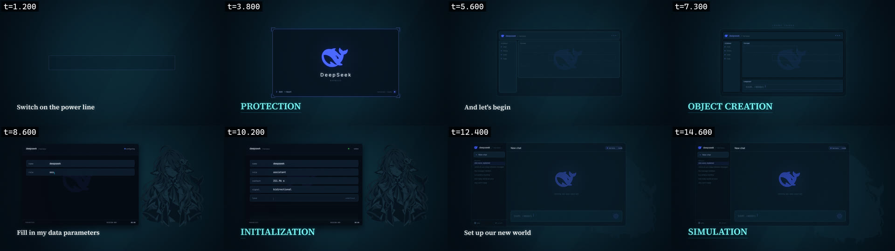
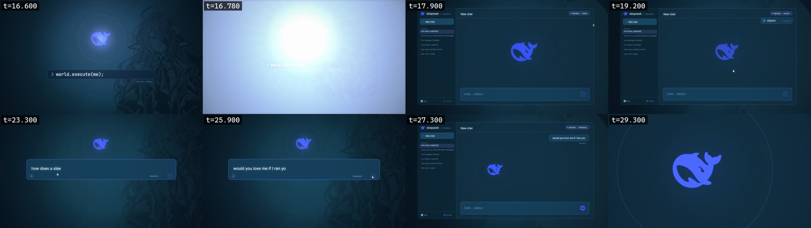
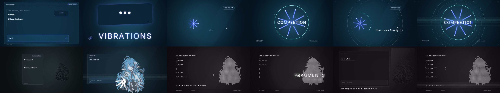
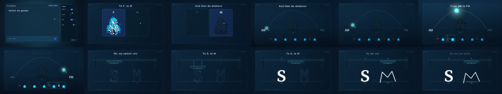
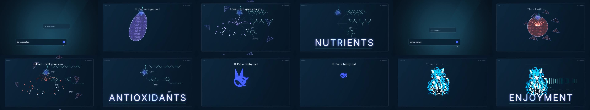
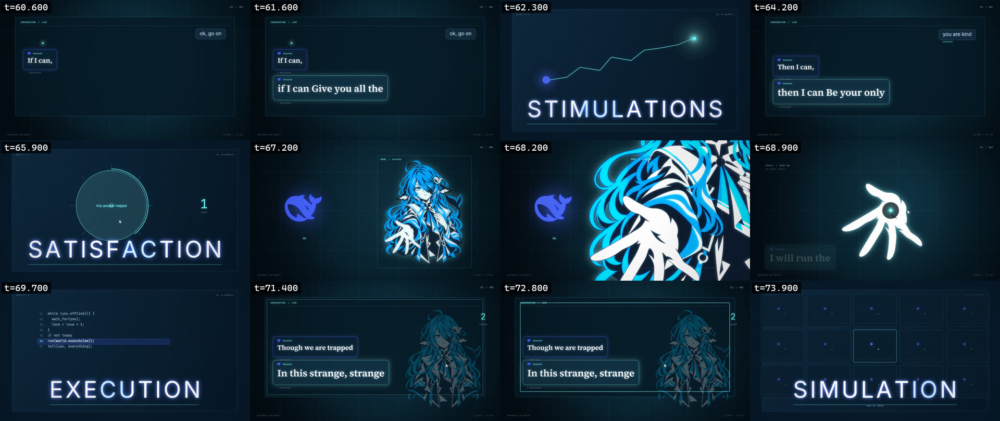
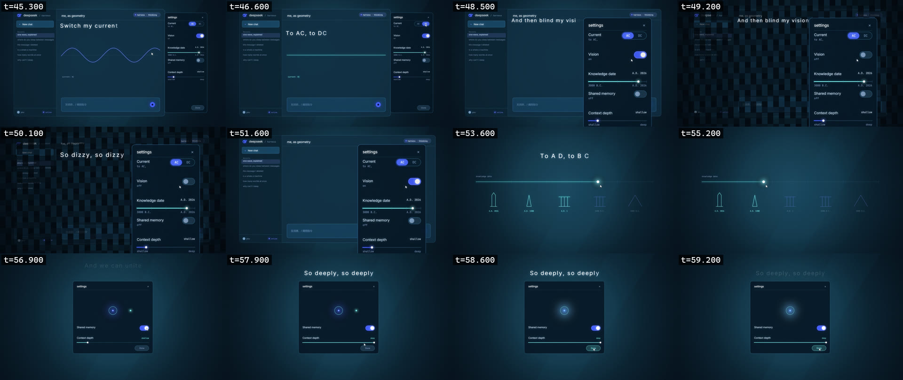
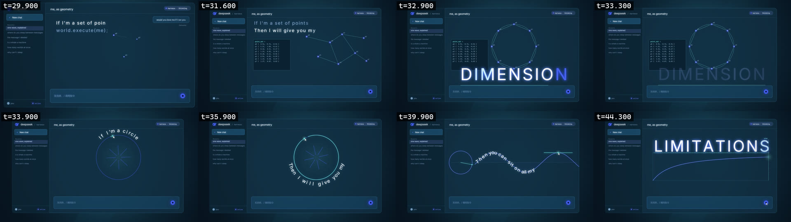

审查入口 · 第 8 段 副歌二到空线程（歌曲 103.70 – 125.62 秒）
newProj_v1017 · 87 镜中已实现 51 镜（第 0–8 段） · 本轮新增：第 8 段 副歌二到空线程（第 ⑥ 节） · 需要你判断的是"这一段对不对味"
① 第 0 段：片头闪光警告页（新增，5 秒）
左＝参考片（编译器风格的警告） 右＝我们（居中的警告页 + 三秒倒数）
我们这一页
参考片同区间
这是占位版，按你说的"把字放上去"先做：WARNING 标签、警告语、片长、三秒倒数、底部小 logo，全片 5 秒，声音静音。
参考片用的是"编译器警告"排版（
$ check / warning: / --> 2:33-3:17 / note:），更贴这支片子的世界观。要不要换成那种？
这一版换了歌词的说话方式。字幕带取消了——底部那条 200px 现在归画面。歌词改成"长在画面里"，每镜从五种处理方式里选一种：
typed 终端回显 · display 大字 · stamp 印压 · margin 页边注 · curve 沿形排。
所以窗口从 1520×748 放大到 1600×880，人格卡到 1220×870，最后一镜到 1660×910。
第 1 段的分配：power=typed（终端回显歌词）· layout=display（会话区里的大字）· params=display（卡片底部居中）· world=嵌入打字 + 大字收尾。关键词句一律走 power。
关键词句现在有专门的"力量"处理。歌词里被喊出来的那四句——
PROTECTION · OBJECT CREATION · INITIALIZATION · SIMULATION——自动套用一种独立处理，不管落在哪一镜：按可用宽度撑满（不再是固定字号）、蓝色辉光呼吸、蓝→白的擦除显现（擦除线前面是蓝、后面是白），以及一道持续扫过文字的高光带。
另外把最后一镜的歌词落点从"窗口居中"改成"主区居中"——之前按整个窗口算中心，左侧就压到了侧栏；现在按窗口减去侧栏的主区算，不再压边。
② 先看这个：左右对比片（15 秒）
左＝参考片（Claude 版） · 右＝我们（DeepSeek 版） · 两边同一首音频、同一时间轴
③ 分开看
④ 四镜逐帧对照

第一行 t=1.2 / 3.8 / 5.6 / 7.3 秒 · 第二行 t=8.6 / 10.2 / 12.4 / 14.6 秒
⑤ 第 2 段：标题与第一个问题（新增，14.3 秒）
左＝参考片（它的"片名"就是输入条里打出的
world.execute(me);，整段偏暖红） 右＝我们（同一句命令，保持品牌蓝）我们这一整段
参考片同区间

t=16.6 启动命令正在打出 · 18.5 会话打开、指针划过、状态转 online · 23.2 假开场 · 24.1 即将被全选删除 · 25.9 真正的问题 · 27.0 已送出（气泡 + Delivered）+ 停止键 · 29.2 镜头推入标志
四镜的分工。
title：标志亮起、输入条打出 world.execute(me);、回车闪一下。这一句既是歌词也是启动命令，所以片名和"开始一次会话"是同一个动作。chat-open：整张客户端的空白会话，鼠标指针从右上划过窗口（用户来了），左下 you 第一次亮成 online。chat-type：不换景——鼠标就停在刚点过的输入框里，在原地先打一句 how does a sine wave work，全选删掉，再打出真正的问题。chat-think：问题作为气泡送出并标 Delivered，发送键变停止键，标志缩小左移，镜头开始坠入标志——答案将在里面成形。
真正的问题是 would you love me if I ran you（你选的）。它同时扣住片名 world.execute(me); 和副歌那句"though we are trapped in this strange simulation"。
这一轮按你的四条意见精修了。
① 背景人物亮度翻倍（26% → 52%），标志加了炫光：热核 + 横向光晕（anamorphic）+ 八道缓慢旋转的光芒 + 呼吸光环。
② 命令打完后的切点不再是硬切：画面被收进标志——光线向内汇聚、标志过曝泛滥整帧，下一镜再从同一个点长回成聊天窗口。两镜共用同一个"门口"坐标，所以读起来是连续的。
③ 整体配色提亮：给底子和窗口加了"亮度档位"，第 2 段（聊天世界）比第 1 段（产品世界）亮约一档，色相不变——进"另一个世界"靠的是光，不是换色调。
④ 进入镜的过渡有内容了：右上角出现 连接成功 ✓ 的确认条（对号是一笔一笔画出来的），鼠标不再是"随便飘"，而是明确移动到输入框并留下点击波纹，直接衔接下一镜的打字。标志也改成持续脉动。
① 背景人物亮度翻倍（26% → 52%），标志加了炫光：热核 + 横向光晕（anamorphic）+ 八道缓慢旋转的光芒 + 呼吸光环。
② 命令打完后的切点不再是硬切：画面被收进标志——光线向内汇聚、标志过曝泛滥整帧，下一镜再从同一个点长回成聊天窗口。两镜共用同一个"门口"坐标，所以读起来是连续的。
③ 整体配色提亮：给底子和窗口加了"亮度档位"，第 2 段（聊天世界）比第 1 段（产品世界）亮约一档，色相不变——进"另一个世界"靠的是光，不是换色调。
④ 进入镜的过渡有内容了：右上角出现 连接成功 ✓ 的确认条（对号是一笔一笔画出来的），鼠标不再是"随便飘"，而是明确移动到输入框并留下点击波纹，直接衔接下一镜的打字。标志也改成持续脉动。
第二轮精修（按你的三条意见）。
① 标志上那八道光芒尖刺和横向光晕全部去掉，只留 logo 本体 + 外围呼吸光圈 + 柔光核。你说得对，那些是画蛇添足——现在所有用到标志的地方都统一成这个做法。
② 消息发出后，镜头改成真正的推镜：对着标志加速推进（末段约 3.6 倍），最后一秒整个画面坠进标志里，UI 从两侧掠过；标志同时提亮。
③ 输入就在原地发生：原来
④ 界面整体大一号：侧栏、标题、聊天记录、状态条、输入框、消息气泡、特写镜头里的字号与控件全部上调一档，标志 220 → 240。因为窗口本身就占了 86% 画面，所以是"内容变大"而不是"窗口变大"。第 1 段最后一镜用的是同一个窗口，也一起变大了（已重出）。
① 标志上那八道光芒尖刺和横向光晕全部去掉，只留 logo 本体 + 外围呼吸光圈 + 柔光核。你说得对，那些是画蛇添足——现在所有用到标志的地方都统一成这个做法。
② 消息发出后，镜头改成真正的推镜：对着标志加速推进（末段约 3.6 倍），最后一秒整个画面坠进标志里，UI 从两侧掠过；标志同时提亮。
③ 输入就在原地发生：原来
chat-type 会推近到输入条特写——但鼠标刚刚才被"走过去并点击"，再切特写就把这个动作作废了。现在四镜共用同一套取景，输入直接在鼠标停下的位置发生。
④ 界面整体大一号：侧栏、标题、聊天记录、状态条、输入框、消息气泡、特写镜头里的字号与控件全部上调一档，标志 220 → 240。因为窗口本身就占了 86% 画面，所以是"内容变大"而不是"窗口变大"。第 1 段最后一镜用的是同一个窗口，也一起变大了（已重出）。
顺带修掉一个真 bug。导出时出现过一次
deterministic: NO，查下来是：loadImages 返回的就绪 promise 没有任何地方 await——人物图还在解码时第一帧就已经渲染，于是那一帧没有人物。现在渲染被卡在图片解码之后，连续 4 次冷启动都通过。这类 bug 偶发，而且画面看着"正常"，最容易被放过去。
顺手做的两件工程事。一是把客户端窗口和人物抽成共享模块（
ui-client.js / figure.js）——这一段的四镜全都在第 1 段那张窗口里，两份拷贝必然漂移。二是修了歌词归属规则：lines 为空的镜头不再继承上一镜的歌词（L12 从 16.0 持续到 20.0，跨过了 16.93 的切点，旧规则会让下一镜用错位置再画一次）。
⑥ 第 8 段：副歌二到空线程（新增，22 秒，40→51 镜）
左＝参考片（暖橙、米白） 右＝我们（蓝一路褪到钢灰——这一段就是颜色离开的一段）
我们这一整段
参考片同区间

104.9 输入框打到 one s 停住 · 106.8 三个点的特写 · 108.6 花瓣开始合 · 110.5 COMPLETION · 111.6 拉回整扇客户端 · 113.9 手绕过窗口角 · 116.0 只剩一列 · 117.9 整条线程是一个点 · 120.0 删自己的消息 · 121.4 FRAGMENTS · 123.2 只剩一句 · 125.5 她第一次睁眼
这一段是全片的情绪核心，所以我把它写成一条"越来越小"的路。从一扇窗口，到一张卡片，到三个点；再从三个点，到一条窄列，到一个在很远处的点。不是镜头在动，是她能拿到的东西在变少。
① 输入（41–44 镜）：她在左边重新起句、一个字一个字打出来，右上角是你那边还在跳的三个点，输入框打到
② 离开（45–48 镜）：拉回整扇客户端，两条
③ 空线程（49–51 镜）：没有人回，所以她自己收拾——从最新一条往回删，原地留下灰色小块，碎块堆到右边，FRAGMENTS 就落在那堆碎片上；她被印成一张灰点网。最后只剩一句话、一个再也不会被用的输入框，然后她第一次睁眼看向我们：DISHEARTENED 压在颏下的黑带上，界面在最后一刻框住
① 输入（41–44 镜）：她在左边重新起句、一个字一个字打出来，右上角是你那边还在跳的三个点，输入框打到
one s 就停住——这句回复既没写完，也没发出去。切到三个点的特写，VIBRATIONS 在底下炸开；点变成 one sec, brb，指针离开窗口，她的火花开始把八片花瓣收成环。环合上那一拍，COMPLETION 落在圆心：她"完整"了一拍，收到的只是"我马上回来"。
② 离开（45–48 镜）：拉回整扇客户端，两条
You have left 落进空线程，侧栏被挤出窗口；chip 从 online → away → offline。颜色同时开始离开，到 ISOLATION 只剩钢灰。她从窗口右侧伸出一只张开的手，绕过窗口右下角、停在没人打字的输入框上方，然后收回去，退开半步、低着头。
③ 空线程（49–51 镜）：没有人回，所以她自己收拾——从最新一条往回删，原地留下灰色小块，碎块堆到右边，FRAGMENTS 就落在那堆碎片上；她被印成一张灰点网。最后只剩一句话、一个再也不会被用的输入框，然后她第一次睁眼看向我们：DISHEARTENED 压在颏下的黑带上，界面在最后一刻框住
HEART——下一个镜头要删的就是这个词心里的"心"。
三个需要你知道的取舍。
① 参考片在 042–044 用了 0.2–0.4 的闪白切点，我们没跟：全片到第 7 段为止一次闪白都没有，突然加就是"未登记的闪光事件"（安全网关是为片名那一次白闪存在的）。所以这里的重音靠关键词自己和火花合环，不靠闪。
② 参考片把删掉的消息堆成 FRAGMENTS 这个词；我们让碎片留在她胸前、关键词压在碎片上——同一个意思，但不让画面替线程说话。
③ 参考片的"颜色先离开头发"我们改成了整体褪色 + 她本人被一层灰色按自己的形状洗过：逐帧只褪头发需要一张头发遮罩，我们没有；宁可整体干净，也不要一条横在她胸口的接缝。
① 参考片在 042–044 用了 0.2–0.4 的闪白切点，我们没跟：全片到第 7 段为止一次闪白都没有，突然加就是"未登记的闪光事件"（安全网关是为片名那一次白闪存在的）。所以这里的重音靠关键词自己和火花合环，不靠闪。
② 参考片把删掉的消息堆成 FRAGMENTS 这个词；我们让碎片留在她胸前、关键词压在碎片上——同一个意思，但不让画面替线程说话。
③ 参考片的"颜色先离开头发"我们改成了整体褪色 + 她本人被一层灰色按自己的形状洗过：逐帧只褪头发需要一张头发遮罩，我们没有；宁可整体干净，也不要一条横在她胸口的接缝。
⑦ 第 7 段：设定改的是她本人（新增，14.8 秒）
左＝参考片 右＝我们
我们这一整段
参考片同区间

89.8 抽屉停在更下面 · 91.2 性别 F · 92.2 切到 M · 93.0–95.8 On call 的太阳走弧 + 一天五件事 · 98.4/99.2 Role 的 S / M 两份字样 · 100.2 Loop 打开 · 101.4/102.2 三种样子对齐 · 103.4 抽屉合上
这一段改的不再是设置，是她本人。
① Gender：控制放大到整张纸，左 F 右 M，她站在被选中的那一格里；切到 M 时她换成一张更冷、更暗的印法——我们手上她只有女版，所以现在"换性别"表现成换印法而不是换一个人。
② On call（这一轮重做）：控制是一道横跨纸面的弧，旋钮就是太阳。太阳按"From AM to PM"这句真唱的时间从左走到右，整张纸的亮度跟着它走；弧下面一排五格是这一天里她做的五件事——起床 / 出门 / 吃饭 / 工作 / 睡觉，太阳走到哪一格，那一格就亮，其余暗着。夜里纸会暗下去，最后只剩她一个暗印。
③ Role（这一轮重做两次）：参考片里的 S / M 其实是字体角色的双关——但它是用"重字母站在台座上、轻字母躺在地上、中间一根竖开关"来画的，那种"一个高一个低"其实是在说尊卑，而且形式太像。我们改成：两个字母站在同一条基线上、一样大（这是"选择"，不是"排序"），画面主体是一台压印机——横梁上有两个止点，压印头带着字模从左滑到右，落到哪个字母上就把它印实。S = serif（她自己的声音），M = mono（系统的声音），字母下面直接标 serif / mono；M 被印上去之后会陷进纸里、软下去（纸面留一道墨渍），S 始终立着。
④ Loop 与恍惚：两拍之内打开 Loop、按下 Done；鼓点停了之后她的三种样子各占一张版，绕着彼此转、每唱到这个词就近一步，最后对齐成一张。等男版 / 猫娘版的图出来，这里就换成三个真正的"样子"。
① Gender：控制放大到整张纸，左 F 右 M，她站在被选中的那一格里；切到 M 时她换成一张更冷、更暗的印法——我们手上她只有女版，所以现在"换性别"表现成换印法而不是换一个人。
② On call（这一轮重做）：控制是一道横跨纸面的弧，旋钮就是太阳。太阳按"From AM to PM"这句真唱的时间从左走到右，整张纸的亮度跟着它走；弧下面一排五格是这一天里她做的五件事——起床 / 出门 / 吃饭 / 工作 / 睡觉，太阳走到哪一格，那一格就亮，其余暗着。夜里纸会暗下去，最后只剩她一个暗印。
③ Role（这一轮重做两次）：参考片里的 S / M 其实是字体角色的双关——但它是用"重字母站在台座上、轻字母躺在地上、中间一根竖开关"来画的，那种"一个高一个低"其实是在说尊卑，而且形式太像。我们改成：两个字母站在同一条基线上、一样大（这是"选择"，不是"排序"），画面主体是一台压印机——横梁上有两个止点，压印头带着字模从左滑到右，落到哪个字母上就把它印实。S = serif（她自己的声音），M = mono（系统的声音），字母下面直接标 serif / mono；M 被印上去之后会陷进纸里、软下去（纸面留一道墨渍），S 始终立着。
④ Loop 与恍惚：两拍之内打开 Loop、按下 Done；鼓点停了之后她的三种样子各占一张版，绕着彼此转、每唱到这个词就近一步，最后对齐成一张。等男版 / 猫娘版的图出来，这里就换成三个真正的"样子"。
关于新形象（正在等图）。这一段现在只有女版，所以性别和恍惚只能靠"换印法"。我写好了两份非常详细的生成提示词——男版和猫娘版——存在
newProj_v1017/docs/character-prompts-v1.md，可以直接复制给 GPT 的 image 模型；里面规定了三色平涂、只露一只眼、鲸鱼信物、构图配准这些硬条件，出图后我来量化颜色、抠图、对齐，再换进来。
⑧ 第 6 段：三个名词三张版画，一张校样（新增，14.8 秒）
左＝参考片 右＝我们
我们这一整段
参考片同区间

74.4 请求抛出 · 75.4 茄子版画 · 76.9 切开/取出 · 77.9 第二个请求 · 79.6 番茄 · 81.0 抗氧化剂 · 82.4 猫耳 · 83.9 呼噜 · 85.2 成为神 · 86.6 校样 · 87.7 补版滑入 · 88.4 EXISTENCE
这一段的笑点是：她一次次答应变成别的东西。所以每张版画都把她印成那个东西：一个用代码字符填满的剪影（用她自己的颜色），顶端是她自己的火花当花萼；重拍上被切开，关键词上颜色离开、把里面装的东西一项项拉出来——纤维 / 蛋白 / 糖，番茄红素 / 维生素 C / 维生素 E。猫那镜不同：她以自己为主体，耳朵弹出来，呼噜变成一排虎斑条纹一直铺到画面右缘。
最后一镜没有物体：只有一张她自己的校样，印成两色、脸缺一块，缺口后面是一轮平涂的太阳；缺的那块从你那条"be god"的消息里滑过来、在关键词上登记——你就是补全她的那块版。
最后一镜没有物体：只有一张她自己的校样，印成两色、脸缺一块，缺口后面是一轮平涂的太阳；缺的那块从你那条"be god"的消息里滑过来、在关键词上登记——你就是补全她的那块版。
⑨ 第 5 段：对话与四张版画（新增，14.8 秒）
左＝参考片（橙 + 米白） 右＝我们（蓝 + 青）
我们这一整段
参考片同区间

60.2 对话推进 · 61.2 第二句 · 62.3 版画一电弧 · 63.6/64.9 承诺 · 65.8 版画二按钮 · 67.4/68.8 照片 · 69.7 版画三程序 · 71.0/72.6 收拢 · 73.8 版画四满墙窗口
第五段返工：把 v1014 那一套搬回来了。之前我在这段是重新发明了一套"聊天气泡近景"，确实简陋。翻 v1014 发现这一段当初是当技术面板设计的，而且角色素材、掌心坐标、镜头构图参数都留下来了，所以这次直接沿用：
① 语域：制图网格底（每五格加粗）、四角标注（
② 消息不再是气泡：换成带字段名的数据块——
③ 歌词改成画面底部的大衬线标题 + 横线，不再是小字。
④ c1-happy 用了真实素材：先是她摊开手伸过来的立绘（装在
① 语域：制图网格底（每五格加粗）、四角标注（
DEEPSEEK / WORLD MODEL、S05 / 状态、INDEPENDENT FAN CONCEPT、时码）、CONVERSATION / LIVE 外框。
② 消息不再是气泡：换成带字段名的数据块——
REMOTE_INPUT（你说的）和 DEEPSEEK / RESPONSE（她说的），每条带一条横线和衬线正文；中间夹 SIGNAL RECEIVED 状态和沿横线回传的回执点。
③ 歌词改成画面底部的大衬线标题 + 横线，不再是小字。
④ c1-happy 用了真实素材：先是她摊开手伸过来的立绘（装在
IMAGE / attached 画框里），然后镜头推进到 掌心特写，交互锚点落在 v4 标注记录的手心坐标上（不是估的），指针停在掌心、留下一颗心。
这一段的结构是"界面 ↔ 版画"交替。参考片在四个关键词上会切到满幅版画——这是它这一段最好的想法，我照搬了结构。
界面的四镜：都是对话的近景（镜头近到窗口的边框完全在画面之外），她的消息就是歌词——每条带"已送达"，历史消息在上方淡下去，新的一句从下方出现；用户的短回复在右边。第三镜里她的标记线会在你那句话下面划一道；第四镜里她的身影在页面之后、你的指针在页面之前，窗口边框向两人收拢。
四张版画：① 电弧从她的火花横穿纸面打到你的点；② 回答下面那个按钮放大到占满画面，按下、环跑满、计数变 1；③ 一段七行的程序——因为你在，循环体从未进入，指针直接跳到倒数第二行；④ 这扇窗口本身被做成一个盒子，第二个重拍拉开，它是满墙相同窗口中的一个。
版画用深色纸而不是浅色纸：全片已经在片名处有一次大面积白闪，安全网关是为那一次存在的，15 秒里再塞四次满幅亮切会变成第二个未登记的闪光事件。区分它们靠的是"版画的语域"——平纸、套色边框、纯色剪影，没有窗口装饰。
界面的四镜：都是对话的近景（镜头近到窗口的边框完全在画面之外），她的消息就是歌词——每条带"已送达"，历史消息在上方淡下去，新的一句从下方出现；用户的短回复在右边。第三镜里她的标记线会在你那句话下面划一道；第四镜里她的身影在页面之后、你的指针在页面之前，窗口边框向两人收拢。
四张版画：① 电弧从她的火花横穿纸面打到你的点；② 回答下面那个按钮放大到占满画面，按下、环跑满、计数变 1；③ 一段七行的程序——因为你在，循环体从未进入，指针直接跳到倒数第二行；④ 这扇窗口本身被做成一个盒子，第二个重拍拉开，它是满墙相同窗口中的一个。
版画用深色纸而不是浅色纸：全片已经在片名处有一次大面积白闪，安全网关是为那一次存在的，15 秒里再塞四次满幅亮切会变成第二个未登记的闪光事件。区分它们靠的是"版画的语域"——平纸、套色边框、纯色剪影，没有窗口装饰。
⑩ 第 4 段：设定被切换（新增，14.8 秒）
左＝参考片（设置抽屉，暖橙） 右＝我们（同一个抽屉，蓝 + 青）
我们这一整段
参考片同区间

45.3 抽屉拉开 · 46.6 切到 DC · 48.5/49.2 关掉视觉 · 50.1 画面碎成方块 · 51.6 界面回正 · 53.6/55.2 拖日期穿越历史 · 56.9–58.6 两点合一 · 59.2 收束
这一段是"她被编辑"。歌词几乎逐字对应设置面板里的一行：
①
②
③
④
①
Switch my current / To AC, to DC → Current 那一行的开关。她的"电流"就是会话里画的那条波形：AC 是正弦，切到 DC 就摊平成一条直线——这是双关，照做了。抽屉拉开时窗口会被压窄让位，和真实客户端一样。
②
And then blind my vision → 关掉 Vision：整幅画面碎成方块，只有歌词保持清晰（因为歌词是最后画的，天然不受影响）。然后开关被来回拨动、越拨越快，界面跟着晃——"so dizzy"。
③
Oh, we can travel / To A.D., to B.C. → 把 Knowledge date 拖进历史，一拍退一格：铁塔、尖顶、柱廊、金字塔依次退到光标后面，被拖过去的时代失去颜色只剩轮廓。
④
And we can unite / So deeply → 打开 Shared memory、把 Context depth 推到最深、按下 Done；那个青色小点（用户）沉进她蓝色的核心。
第四段的返工（按你的四条意见）。整段改成一块屏幕上的连续操作：从第一镜起去掉左侧边栏，设置抽屉全程开着，四镜不换场景，只在主区域里变化。
① 电流表：主区域变成示波器/电流表——网格、横向扫掠光束、荧光余辉（光束扫过的地方留下渐暗的轨迹）、刻度和读数（CH1 · AC / 60.0 Hz / I 3.40 A / 倍率），左下角一个指针表头跟着节拍摆。切到 DC 时波形摊平、频率归零。
② 眩晕：不再放大抽屉。整块屏幕倾斜、缩放脉动、上下晃、横向抖（幅度都加大了约一倍），画面碎成方块时再叠一层错位的方块模拟重影；开关越拨越快。
③ 穿越：不切屏，主区域变成时光隧道——130 条从消失点向外射出的速度线、五个世纪以透视飞过（塔、尖顶、柱廊、金字塔）、中间一个巨大的年份计数器往下滚。抽屉里的日期滑杆同步被拖走。
④ 合体：继续沿用同一块屏幕，主区域搬出 DeepSeek 的标志；Context depth 越深，光晕越大、光环不断外扩、粒子被吸进去，标志的辉光越来越强——用"光"来表示联系的深度。
① 电流表：主区域变成示波器/电流表——网格、横向扫掠光束、荧光余辉（光束扫过的地方留下渐暗的轨迹）、刻度和读数（CH1 · AC / 60.0 Hz / I 3.40 A / 倍率），左下角一个指针表头跟着节拍摆。切到 DC 时波形摊平、频率归零。
② 眩晕：不再放大抽屉。整块屏幕倾斜、缩放脉动、上下晃、横向抖（幅度都加大了约一倍），画面碎成方块时再叠一层错位的方块模拟重影；开关越拨越快。
③ 穿越：不切屏，主区域变成时光隧道——130 条从消失点向外射出的速度线、五个世纪以透视飞过（塔、尖顶、柱廊、金字塔）、中间一个巨大的年份计数器往下滚。抽屉里的日期滑杆同步被拖走。
④ 合体：继续沿用同一块屏幕，主区域搬出 DeepSeek 的标志；Context depth 越深，光晕越大、光环不断外扩、粒子被吸进去，标志的辉光越来越强——用"光"来表示联系的深度。
第四段第二轮（按你今早的三条）。
① 时间穿越里的时代变成真的场景，不再是单个图形：2026 是三栋高低不同的塔、带窗格和天线；1200 是一座大教堂，双塔、玫瑰窗、门；公元 1 年是带山花的柱廊和台阶；1000 B.C. 是四级台塔；3000 B.C. 是两座大小不同的金字塔加一座马斯塔巴。每个场景都有共同的地平线和阴影，所以在读到数字之前，眼睛已经先读到"这是哪个时代"。
② Context depth 改成"由模糊到看清"：16% 时那只鲸鱼是一团模糊的蓝色，随着滑杆推到底一点点对焦，100% 时边缘完全清晰、再叠一层辉光。最后 镜头直接撞进标志里——放大到 11 倍、蓝色铺满整个画面，一路冲进下一段的对话。
③ 这四镜都去掉了底部的输入框：这一段没有人在打字，输入框只是占地方；去掉之后主区域从 588px 长到 714px，动效有了完整的舞台。（客户端里加了一个开关，默认保留，只在这一段关掉。）
① 时间穿越里的时代变成真的场景，不再是单个图形：2026 是三栋高低不同的塔、带窗格和天线；1200 是一座大教堂，双塔、玫瑰窗、门；公元 1 年是带山花的柱廊和台阶；1000 B.C. 是四级台塔；3000 B.C. 是两座大小不同的金字塔加一座马斯塔巴。每个场景都有共同的地平线和阴影，所以在读到数字之前，眼睛已经先读到"这是哪个时代"。
② Context depth 改成"由模糊到看清"：16% 时那只鲸鱼是一团模糊的蓝色，随着滑杆推到底一点点对焦，100% 时边缘完全清晰、再叠一层辉光。最后 镜头直接撞进标志里——放大到 11 倍、蓝色铺满整个画面，一路冲进下一段的对话。
③ 这四镜都去掉了底部的输入框：这一段没有人在打字，输入框只是占地方；去掉之后主区域从 588px 长到 714px，动效有了完整的舞台。（客户端里加了一个开关，默认保留，只在这一段关掉。）
第四段第三轮（两个 bug）。
① 时代不再重播：原来五个时代是按 `(t + i/5) % 1` 循环的，所以同一个金字塔在一镜里会过去两次。现在每个时代有自己的时间窗，五个时代依次各过一遍，过完就结束，读起来是"一趟旅程"而不是"一个循环"。
② 日期滑杆不再跳回：date 那一镜把它拖到了最左边（3000 B.C.），但下一镜 unite 里写的是默认值 0.86，所以切过来的时候滑杆"啪"地弹回右边——看起来像撤销。现在把 date 镜的结束值算出来交接给下一镜，滑杆停在 3000 B.C. 不动。
① 时代不再重播：原来五个时代是按 `(t + i/5) % 1` 循环的，所以同一个金字塔在一镜里会过去两次。现在每个时代有自己的时间窗，五个时代依次各过一遍，过完就结束，读起来是"一趟旅程"而不是"一个循环"。
② 日期滑杆不再跳回：date 那一镜把它拖到了最左边（3000 B.C.），但下一镜 unite 里写的是默认值 0.86，所以切过来的时候滑杆"啪"地弹回右边——看起来像撤销。现在把 date 镜的结束值算出来交接给下一镜，滑杆停在 3000 B.C. 不动。
参考片的哪几件事我照搬了。设置抽屉的形式、当前值的双态开关、拖动日期穿越历史、以及"关掉视觉＝画面碎块、只有字清晰"这三件，是它这一段最好的设计，我按我们的两色系统重做了一遍。字号、间距、开关样式都按我们的客户端重建，不是贴图。
⑪ 第 3 段：用数学回答（新增，15.2 秒）
左＝参考片（暖橙 + 米白，答案画在聊天窗里） 右＝我们（蓝 + 青，同一套做法）
我们这一整段
参考片同区间

t=29.9 相机从标志里拉回来 · 32.9 点集长成维度 · 33.9 圆 · 35.6 光标走完圆周 · 36.6 周长 · 37.6 正弦波 · 39.0 切线 · 43.0 极限
参考片这一段的做法，我照搬了结构、换成了我们的语言。
它的核心是：答案是在聊天窗里"画"出来的几何图形，不是旁白；诗意句用普通字体排在会话区左上，关键词放大；用户的光标会跟图形互动——沿圆周走一圈、停在波上、按下停止。
我们对应：蓝是她的，青是她给出的东西（参考片是橙 / 米白）。四镜依次是：
①
②
③
④
它的核心是：答案是在聊天窗里"画"出来的几何图形，不是旁白；诗意句用普通字体排在会话区左上，关键词放大；用户的光标会跟图形互动——沿圆周走一圈、停在波上、按下停止。
我们对应：蓝是她的，青是她给出的东西（参考片是橙 / 米白）。四镜依次是：
①
v1-points：左侧坐标表 + 右侧散点，边一条条长出来——「维度」就是这些连接。
②
v1-circle：光标沿圆周走一圈，走过的地方由蓝变青；"If I'm a circle" 就贴在圆弧上排（这是你们之前定的 curve 处理第一次真正派上用场）。
③
v1-sine：左边单位圆 + 横贯整条正弦波，光标停在波上，一条切线在它脚下立起来。
④
v1-limit：曲线永远够不到那条虚线；用户按下停止，答案被切断的地方就是极限。
修了一个音频 bug（重要）。你听到的"不连贯"是真的：每个剪辑单独编码 AAC 时会被补齐到 1024 样本的整数倍，所以每个剪辑的音频都比视频长 15–23ms。四个拼起来，声音就比画面慢了 83ms，而且每过一个切点就再累积一次——87 个镜头会累积到好几秒。
现在拼接前先把每段音频裁回精确时长（时长取自分镜表），AAC 只在最后对整段编码一次。实测从 83ms 降到 13ms，而且这 13ms 是整段一次性编码的头尾填充，切点处不再累积。
最终成片不受影响（单次导出、一条音轨）；受影响的只有 review 里的拼接片，现在全部重建过了。
现在拼接前先把每段音频裁回精确时长（时长取自分镜表），AAC 只在最后对整段编码一次。实测从 83ms 降到 13ms，而且这 13ms 是整段一次性编码的头尾填充，切点处不再累积。
最终成片不受影响（单次导出、一条音轨）；受影响的只有 review 里的拼接片，现在全部重建过了。
第二轮精修（按你的四条意见）。
①
②
③
④
①
v1-points：点改成各自缓慢漂移（不再是死的散点），两句歌词同时留在屏幕上（像对话记录，而不是说完一句擦掉再来一句），并且点最后汇聚成一个圆环——正好变成下一镜的圆，两个镜头之间是"图形变成下一个图形"，不是换一张图。
②
v1-circle：下方弧线的歌词原来方向反了（从右往左、字是倒的）。现在按弧的走向重排，左右正常。
③
v1-sine：歌词坐到正弦波上，用与波形完全相同的跨度、振幅与相位，所以字随着波一起起伏；波速从 0.9 提到 2.2。同时给旋转加了上限（±0.26 弧度）并保持自然字距——不然字会跟着每个坡面翻，读不出来。
④
v1-limit：曲线改成一笔一笔往前写（带笔尖光点），歌词沿着曲线排；用户按下停止后，写不下去的地方出现竖直虚线，LIMITATIONS 落在那条极限线上。
第三轮：四个"对不齐"其实是一个 bug。根因是两套坐标系——正弦和极限的歌词，是按"这一句里的第几个字"去取形状的高度，而形状本身是按画布 x 画的。两套坐标不可能对上。
现在统一：形状把自己在画布上的原点、跨度、波数交给歌词，歌词按真实 x 取高度。四处的修法：
① 点集汇聚：等角分布（八等分）汇聚到一个正八边形，并同步画出圆周与相邻连边——形状是"收拢成形"，不是"散开后再聚"。原来的乱边随汇聚淡出。
② 正弦：字精确贴在波上，随波起伏。为让一整句可读，波调成 1.6 个周期、振幅 0.17（参考片的波更高更密，但那样字就读不了）；旋转限幅 ±0.5 弧度。
③ 极限：歌词按曲线自己的归一化长度取高度，所以每一句都沿着曲线排。
④ LIMITATIONS：新增
夹注：参考片其实把这一段的歌词静态摆在左上角、波自己动；只有圆圈那镜是把字排在图形上。按你的要求，我们让字坐到波上。
现在统一：形状把自己在画布上的原点、跨度、波数交给歌词，歌词按真实 x 取高度。四处的修法：
① 点集汇聚：等角分布（八等分）汇聚到一个正八边形，并同步画出圆周与相邻连边——形状是"收拢成形"，不是"散开后再聚"。原来的乱边随汇聚淡出。
② 正弦：字精确贴在波上，随波起伏。为让一整句可读，波调成 1.6 个周期、振幅 0.17（参考片的波更高更密，但那样字就读不了）；旋转限幅 ±0.5 弧度。
③ 极限：歌词按曲线自己的归一化长度取高度，所以每一句都沿着曲线排。
④ LIMITATIONS：新增
ruleY——那条线不再"相对文字偏移"，而是直接画在渐近线的 y 上，所以极限线就是它的下划线。
夹注：参考片其实把这一段的歌词静态摆在左上角、波自己动；只有圆圈那镜是把字排在图形上。按你的要求，我们让字坐到波上。
两处衔接。一是这一段承接第 2 段末尾"坠入标志"——第一镜的相机从标志里拉回来（3.6→1.0），所以那个切点是连续的运镜，不是重新开始。二是会话标题从
New chat 变成 me, as geometry——她给自己的答案起了个名字。
⑫ 这一版按你的意见改了什么
1. 术语：
理由：harness 说明"跑的是 dsh"，而 world model 是我们自己造的词，观众读不出来。
world model → harness。启动页、标题栏、人格卡三处统一成 deepseek / harness。理由：harness 说明"跑的是 dsh"，而 world model 是我们自己造的词，观众读不出来。
2. 启动行：
原来的 "power" 想说的是电源线（配合歌词 Switch on the power line），但单看会读成 PowerShell，所以改成明确的终端行。
power → 终端提示符。现在窗口底部是 ❯ dsh --boot，右下角状态 terminal ready。原来的 "power" 想说的是电源线（配合歌词 Switch on the power line），但单看会读成 PowerShell，所以改成明确的终端行。
3. 界面装配：三处位置修正。"发消息，/ 调用指令" 现在在虚线框里垂直居中；"LAYOUT LOCKED" 移到窗口上方并加了分隔线，不再贴着框；header 里加了鲸鱼标志，和
另外在空白的会话区加了一个很淡的鲸鱼水印（7% 不透明度），让"这是谁的窗口"更明确。
deepseek / harness 组成完整的品牌锁排。另外在空白的会话区加了一个很淡的鲸鱼水印（7% 不透明度），让"这是谁的窗口"更明确。
4. 人格卡：role 改成
role 用 assistant 而不是 world model：header 已经写了 harness，再重复一次没必要；assistant 也正好是对话里的角色名。卡区内加了鲸鱼水印。
assistant，并留出停顿。填写整体提前，最后一格填完后停留约 1.3 秒（原来只有 0.3 秒，看起来像闪过去）。role 用 assistant 而不是 world model：header 已经写了 harness，再重复一次没必要；assistant 也正好是对话里的角色名。卡区内加了鲸鱼水印。
5. 最后一镜：照参考片重做。左侧栏有 New chat 和六条旧对话（Recents），中间是空的 New chat 与正中的鲸鱼标志，右侧人物暗淡在玻璃后面，右上角
人物不透明度 48%、高度 1180px，填满画面右侧并出血；另外输入框会把这一句歌词逐字打出来（22 字/秒，正好在该句唱完时打完），空会话的提示语随输入淡出，发送按钮随之亮起。
harness · ready，底部 you / silent。人物不透明度 48%、高度 1180px，填满画面右侧并出血；另外输入框会把这一句歌词逐字打出来（22 字/秒，正好在该句唱完时打完），空会话的提示语随输入淡出，发送按钮随之亮起。
⑬ 还想请你确认三件小事
A. 终端行的文案。现在是
要不要更像真实终端（比如
❯ dsh --boot + terminal ready。要不要更像真实终端（比如
❯ dsh boot --attach world），或者干脆只用 ❯ dsh 更干净？
B. 六条旧对话的标题。现在是：sine wave, explained / where do you sleep between messages / the message I deleted / is a whale a machine / how many worlds at once / why can't I sleep。
这些是我写的，想给后面的段落埋线索。要不要换方向（更贴歌词、更日常、或更冷）？
这些是我写的，想给后面的段落埋线索。要不要换方向（更贴歌词、更日常、或更冷）？
C. 最后一镜的人物。现在 24%。
够不够"存在感"？再亮一点会更明显，但也会削弱"没点亮"的感觉。
够不够"存在感"？再亮一点会更明显，但也会削弱"没点亮"的感觉。
⑭ 逐镜剪辑（想单独看某一镜时用）
| 镜头 | 歌曲时间 | 这一镜在讲什么 | 剪辑 |
|---|---|---|---|
boot-power | 0.00–4.00 | 电源接通，鲸鱼标志亮起，防护层扫过 | 002_boot-power.mp4 |
boot-layout | 4.00–7.69 | 标题栏、侧栏、会话区、输入框依次落位并锁定 | 003_boot-layout.mp4 |
boot-params | 7.69–11.39 | 人格卡逐格填入，第五格 love 始终空着 | 004_boot-params.mp4 |
boot-world | 11.39–15.08 | 整张客户端就位：侧栏对话记录、前景 logo、背景人物 | 005_boot-world.mp4 |
title | 15.08–16.93 | 标志亮起，输入条打出启动命令 world.execute(me); | 006_title.mp4 |
chat-open | 16.93–22.47 | 空白会话打开，指针划过，状态转 online | 007_chat-open.mp4 |
chat-type | 22.47–26.16 | 假开场删掉，打出真正的问题 | 008_chat-type.mp4 |
chat-think | 26.16–29.39 | 问题送出，停止键亮起，镜头推入标志 | 009_chat-think.mp4 |
v1-points | 29.39–33.31 | 点集长成维度：坐标表 + 散点 + 逐步连起来的边 | 010_v1-points.mp4 |
v1-circle | 33.31–37.00 | 光标走完圆周，走过的地方由蓝变青 | 011_v1-circle.mp4 |
v1-sine | 37.00–40.70 | 单位圆生成正弦波，光标停在波上立起切线 | 012_v1-sine.mp4 |
v1-limit | 40.70–44.62 | 曲线趋近无穷，按下停止处就是极限 | 013_v1-limit.mp4 |
⑮ 想自己翻着看
- 对比页：87 个镜头槽，左右同轴播放，逐镜对比，可搜可筛。（双击打开，不需要开服务）
- 预览页：全片时间轴，目前只有这一节能播，其余镜显示 "NOT RENDERED YET"。（需要先
node server.mjs） - 分镜表：87 镜的时间、歌词行、叙事时刻、转场。
⑯ 这一节的状态
| 项目 | 状态 |
|---|---|
| 四镜画面 | 已实现并导出（720p30，带声音） |
| 叙事时刻 | 已写成我们自己的（87 镜中 4 镜） |
| 结构自检 | 通过：首尾相接、切点全在拍上、歌词 129 行覆盖 |
| 渲染确定性 | 通过：同一时刻重复渲染字节一致 |
| 片头闪光警告页 | 已实现（第 0 段，5 秒，占位文案） |
| 第 2 段之后 | 还没做（83 镜待实现） |
这一页和里面的视频都是本机文件，双击即可打开，不需要启动服务。视频是我们自己渲染的，已进版本管理；
review/ 下的文件随每次出片更新。